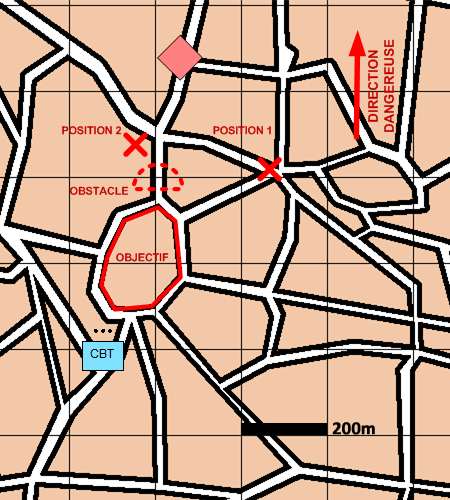

NIVEAU :Pion
ARME :Melee
MISSION :Interdire
Objectif principal
- Occuper
- Détruire / Neutraliser
Modalités d'exécution
-
Mise en place du plan d'obstacles (optionnel) ;
-
Rejoindre une position d'installation efficace pour interdire l'accès à l'objectif ;
-
Engager les éléments ENI s'approchant de l'objectif.
Schéma de modélisation

Paramètres obligatoires
Objectif (parmi les objectifs suivants)
Point :
Position à interdire.
Bloc Urbain :
Bloc Urbain à interdire.
Zone :
Zone à interdire.
Positions (parmi les suivantes)
Point :
Position à interdire.
Bloc Urbain :
Bloc Urbain à interdire.
Face a (parmi les suivants)
Point :
Position à interdire.
Bloc Urbain :
Bloc Urbain à interdire.
Zone :
Zone à interdire.
Paramètres optionnels
Obstacles: Obstacles à construire.
Valoriser obstacles: Indique si on valorise les obstacles après construction.
Direction Dangereuse
Limite gauche / Limite droite
Lignes de début et fin de mission [LDM/LFM]
Positions d'installation